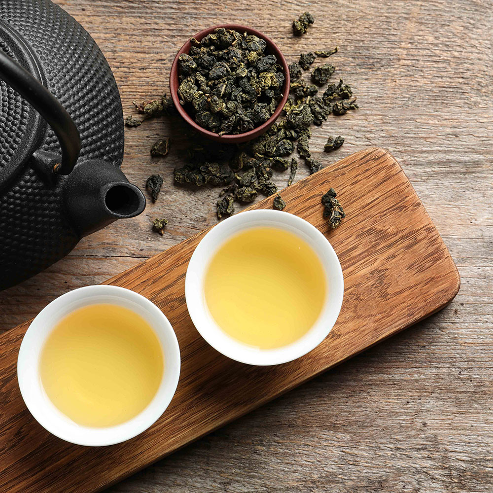
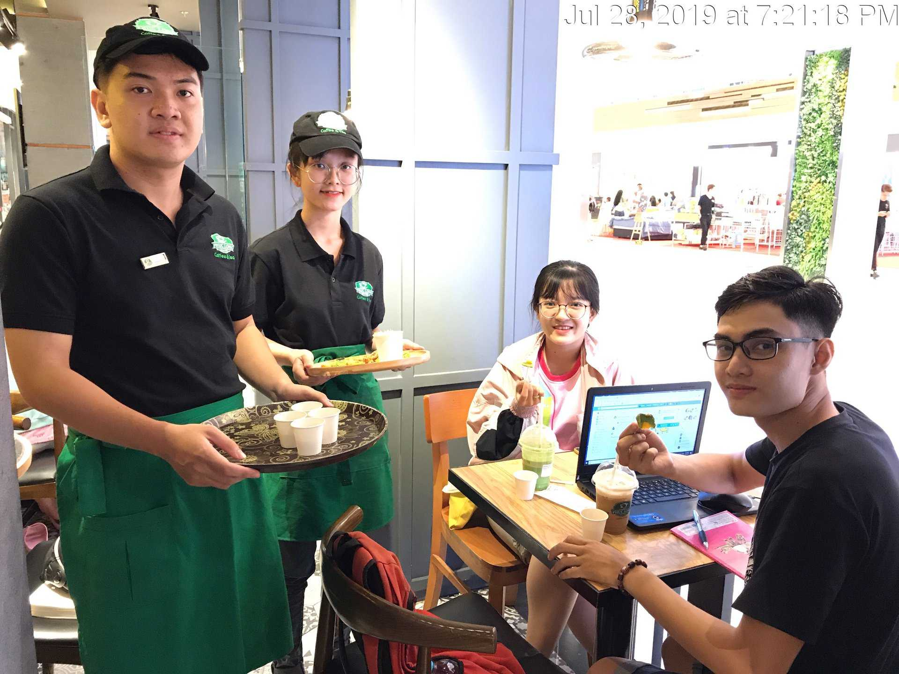

TỪ NHỮNG MẦM TRÀ, CHÚNG TÔI TẠO RA NIỀM ĐAM MÊ
Trải qua hơn 50 năm chắt chiu tinh hoa từ những búp trà xanh và hạt cà phê thượng hạng cùng mong muốn mang lại cho khách hàng những trải nghiệm giá trị nhất khi thưởng thức,
Phúc Long liên tục là thương hiệu tiên phong với nhiều ý tưởng sáng tạo đi đầu trong ngành trà và cà phê.
Chúng tôi tin rằng từng sản phẩm trà và cà phê sẽ càng thêm hảo hạng khi được tạo ra từ sự phấn đấu không ngừng cùng niềm đam mê.
Và chính kết nối dựa trên niềm tin, sự trung thực và tin yêu sẽ góp phần mang đến những nét đẹp
trong văn hóa thưởng trà và cà phê ngày càng bay cao, vươn xa.

ĐỘI NGŨ NHÂN VIÊN TRÀN ĐẦY NHIỆT HUYẾT
Trong suốt quá trình hoạt động và phát triển, đội ngũ quản lý và nhân viên của Phúc Long Coffee & Tea, qua bao thế hệ, đã cùng nhau xây dựng, nuôi dưỡng niềm đam mê dành cho trà và cà phê với mong muốn được thử thách bản thân trong ngành dịch vụ năng động và sáng tạo.
Chi nhánh tp.HCM
-350 Lê Văn Sĩ Q.3
-188 Trần Hưng Đạo Q.5
-63 Mạc Thị Bưởi Q.1
-42 Ngô Đức Kế Q.1
-122 Lê Lợi Q.1
-42 Phạm Hồng Thái Q.1
-157-159 Nguyễn Thái Học Q.1
-382 Trần Hưng Đạo Q.5
-380 Cách Mạng Tháng Tám Q.3
-812 Sư Vạn Hạnh Q.10
Chi nhánh Hà Nội
-82-84 Hàng Điếu Q.Hoàn Kiếm
-5 Tạ Quang Bửu Q.Hai Bà Trưng
-02 Đặng Thanh Mai Q.Tây Hồ
-21 Lê Văn Lương Q.Thanh Xuân
-1 Ngõ 122 Vĩnh Tuy Q.Hai Bà Trưng
Chi nhánh Đà Nẵng
-06 Đại Nam Q.Hải Châu
-59-61 Nguyễn Văn Linh Q.Hải Châu
l,l,